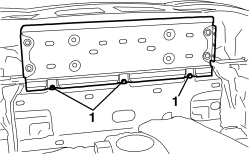
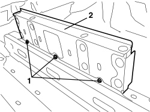

7210B71 BACKREST REAR PARTITION - R.R.
- Path
- Procedures > 72 PANELS AND FRAMES > 7210 REMOVING-REFITTING > 7210B STRUCTURAL ELEMENTS (CENTRE AND REAR SECTION) > 7210B71 BACKREST REAR PARTITION - R.R.
- Kind
- repair procedure (removal / refitting; the operation number is the code)
- Applies to
- engines: 2.2 JTS, 3.2 JTS; all production periods; only with equipment: Spider
- Interactive page
- https://sloeber94.github.io/elrnDB-aBrrSpdr/en/#/946004206
Applies to: engines: 2.2 JTS, 3.2 JTS; all production periods; only with equipment: Spider
 Removing
Removing
 Refitting
Refitting- Discharge the hood hydraulic system pressure.
Op. 0010T79 HOOD HYDRAULIC SYSTEM - DISCHARGE AND RESTORE PRESSURE
Op. 7040H21 MOULDING ON PASSENGER COMPARTMENT REAR TRIM - R.R.
Op. 7040H22 PASSENGER COMPARTMENT REAR TRIM (SPIDER) - R.R.
- Work on both sides of the vehicle.
Op. 7040L31 REAR ODDMENTS COMPARTMENT - R.R.
Op. 7040L51 REAR ODDMENTS COMPARTMENT SUPPORT - R.R.
Op. 7040H50 REAR PANEL (ONE), LEFT OR RIGHT - R.R
Op. 7065A19 IDLER SUPPORT FOR FRONT SEAT BELT (ONE), LEFT OR RIGHT - R.R.
Op. 7065C96 REAR WIND STOP - R.R.
Op. 7040C11 HOOD HOUSING COMPARTMENT FLOOR TRIM - R.R.
Op. 7040C12 HOOD HOUSING COMPARTMENT FRONT TRIM - R.R.
Op. 7055B20 ROLL BAR, LEFT OR RIGHT - R.R.
Op. 7040H73 ROLL BAR LOWER TRIM - R.R.
Op. 7025D24 HOOD HOUSING COMPARTMENT COVER LOCK (ONE), LEFT OR RIGHT - R.R.
1. Undo the three front bolts.

Applies to: engines: 2.2 JTS, 3.2 JTS; all production periods; only with equipment: Spider
1. Undo the three rear bolts.
2. Remove the partition.

Applies to: engines: 2.2 JTS, 3.2 JTS; all production periods; only with equipment: Spider
Refitting
Removing- Check that the partition is not damaged.
- Position the partition and secure it using the bolts.
Component | Fastening | dia | Value (daNm) | Validity |
|---|---|---|---|---|
PARTITION BETWEEN PASSENGER COMPARTMENT AND HOOD COMPARTMENT | Bolt | - | 2.9 ÷ 3.5 |
Op. 7025D24 HOOD HOUSING COMPARTMENT COVER LOCK (ONE), LEFT OR RIGHT - R.R.
Op. 7040H73 ROLL BAR LOWER TRIM - R.R.
Op. 7055B20 ROLL BAR, LEFT OR RIGHT - R.R.
Op. 7040C12 HOOD HOUSING COMPARTMENT FRONT TRIM - R.R.
Op. 7040C11 HOOD HOUSING COMPARTMENT FLOOR TRIM - R.R.
Op. 7065C96 REAR WIND STOP - R.R.
Op. 7065A19 IDLER SUPPORT FOR FRONT SEAT BELT (ONE), LEFT OR RIGHT - R.R.
Op. 7040H50 REAR PANEL (ONE), LEFT OR RIGHT - R.R
Op. 7040L51 REAR ODDMENTS COMPARTMENT SUPPORT - R.R.
Op. 7040L31 REAR ODDMENTS COMPARTMENT - R.R.
Op. 7040H22 PASSENGER COMPARTMENT REAR TRIM (SPIDER) - R.R.
Op. 7040H21 MOULDING ON PASSENGER COMPARTMENT REAR TRIM - R.R.
- Restore the hood hydraulic system pressure.
Op. 7030H03 HOOD MANUAL OPENING FOLLOWING DEACTIVATION OF HYDRAULIC SYSTEM - CARRY OUT PROCEDURE
Topics linked from this page (14)
- 0010T79 HOOD HYDRAULIC SYSTEM - DISCHARGE AND RESTORE PRESSURE
- 7025D24 HOOD HOUSING COMPARTMENT COVER LOCK (ONE), LEFT OR RIGHT - R.R.
- 7030H03 HOOD MANUAL OPENING FOLLOWING DEACTIVATION OF HYDRAULIC SYSTEM - CARRY OUT PROCEDURE
- 7040C11 HOOD HOUSING COMPARTMENT FLOOR TRIM - R.R.
- 7040C12 HOOD HOUSING COMPARTMENT FRONT TRIM - R.R.
- 7040H21 MOULDING ON PASSENGER COMPARTMENT REAR TRIM - R.R.
- 7040H22 PASSENGER COMPARTMENT REAR TRIM (SPIDER) - R.R.
- 7040H50 REAR PANEL (ONE), LEFT OR RIGHT - R.R
- 7040H73 ROLL BAR LOWER TRIM - R.R.
- 7040L31 REAR ODDMENTS COMPARTMENT - R.R.
- 7040L51 REAR ODDMENTS COMPARTMENT SUPPORT - R.R.
- 7055B20 ROLL BAR, LEFT OR RIGHT - R.R.
- 7065A19 IDLER SUPPORT FOR FRONT SEAT BELT (ONE), LEFT OR RIGHT - R.R.
- 7065C96 REAR WIND STOP - R.R.